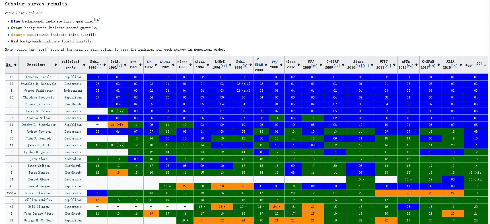
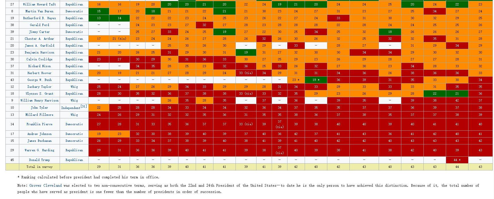
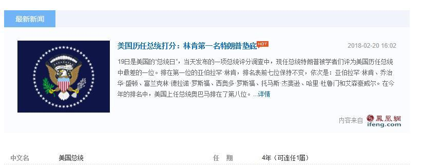

「台盟」换届之前，一把手是林文漪，于是知乎人工智障算法经常于首页推荐林白水。这个「福建闽侯青圃村人」，当年骂的是「长腿将军张宗昌、马屁精潘复、兵痞王琦」。同时出现在知乎首页的，就是张委员长、张副总理、潘建伟、潘基文、「王佐」。
转过年来林文漪让位苏辉上台，之前林郑月娥冻蒜香港特首，于是知乎人工智障算法恍惚之间遭了天启觉悟了，「进化」了，开始于首页刷屏推荐林则徐了也。
新时代中国特色社会主义大好形势下，繁荣的中文互联网上，亮眼的「大数据」应用，真有趣哉！
历史综合排名是重点，注意看英文维基页面：
 美国总统历史综合排名  美国总统历史综合排名 历史综合排名是重点，注意看英文维基页面：
维基排名：Historical rankings of presidents of the United States
国内媒体：美国历任总统打分：林肯第一名特朗普垫底
以及以下两回答均有所提及该排名：
百度官方推荐新闻也有这条：
 林肯第一川普垫底
谢（知乎人工智障算法于首页应景）推荐。
说应景，是因为半夜在《清徽：元朝的建立残酷血腥，元朝的统治宽松自由，如何看待这一两面性？》之下发了条评论：
「台盟」换届之前，一把手是林文漪，于是知乎人工智障算法经常于首页推荐林白水。这个「福建闽侯青圃村人」，当年骂的是「长腿将军张宗昌、马屁精潘复、兵痞王琦」。同时出现在知乎首页的，就是张委员长、张副总理、潘建伟、潘基文、「王佐」。
转过年来林文漪让位苏辉上台，之前林郑月娥冻蒜香港特首，于是知乎人工智障算法恍惚之间遭了天启觉悟了，「进化」了，开始于首页刷屏推荐林则徐了也。
新时代中国特色社会主义大好形势下，繁荣的中文互联网上，亮眼的「大数据」应用，真有趣哉！
也就是说，按照我中华兲朝上国那发达的玄学传统，「汉字自有魔力在此」哪怕是「音译」也一样。所以知乎首页出现「林肯汽车」广告乃至推荐了一大堆「林肯」字眼的回答也不奇怪。
可以找一些旁证，比方说数学相关内容吧，「台盟」换届之后苏步青忽然又热门起来，还引发了口水战。这个嘛，可以参考当初某位「哲学」专业的朋友指着康德鼻子骂「玄学」（链接），就因为这俩「音译汉字」与特大日本帝国传奇皇军扶持的甚大满洲帝国史诗陛下采用的年号相同。
不明真相的围观群众可以邀请旅居「南不列颠及北爱尔兰联合王国」的@李归农、旅居「德意志民族神圣罗马帝国」的@dhchen、旅居「佩恩林地の友爱之城」的@Yuhang Liu等几位业内，解说其中蕴涵的深刻的政治和意识形态内容以及体现的政治和意识形态斗争新动向。
扯远了，回归话题。
现在都知道，林肯是「共和党」总统，功绩是解放黑奴之后打赢了南北战争，只不过是当年的共和党，不是现在这个，虽然有「延续性」。
当年的共和党的基本盘，是美国东北部「工业」重镇，如今的「铁锈地带」，重要据点是克里夫兰。那时候的「工业化」，是「血汗工厂」，是把工人当作流水线零件那样批量使用，所以需要大量的廉价劳动力，不能让南方蓄奴州的民主党大佬们把这批劳动力束缚在土地上。
历史常识略。就说战后为啥美国政治版图逐步对掉：民主党在东北崛起了代表与时俱进的城市精英，而共和党跑到南方听着乡村音乐当农场主牧场主去了。很简单，因为「产业升级」了，自动化设备的大规模应用不需要那么多劳动力了。
六十年代的美国，拥有世界上最大的产业工人队伍，是恐怖的工业机器，全力运转可以扫平天下，那是相对国力的巅峰。与此同时，左翼运动抬头，民权意识提升，种族平等流行，这是发达的资本主义国家当中无产阶级相对地位的巅峰。
但是这波「产业升级」的最初受益者，还是第一产业，也就是农场牧场进行工业化自动化生产。本来拖拉机时代就不需要那么多农奴，可以撵进工厂当革命螺丝钉，到了飞机播种撒农药联合收割机刮地皮的时代，连普通红脖子都不需要那么多了，但是没地方可以撵了。
所以，如今的「大地主」就是当年的「大实业家」，差不多还是那些共和党「家族」，除了个别跟不上时代而被历史の五对负重轮碾为齑粉的破落户。而体现在政策上，当年共和党为了钱可以捏着鼻子解放黑奴，再把他们吸收进工厂，如今不需要这幅伪装了。
民主党的情况稍微有点复杂，当年在美国南部蓄奴州当「大地主」的时候，黑奴是财产，出了事是自己的损失，不听使唤则需要「有活力的民间团体」也就是「3K党」威慑。所以修水坝之类危险的工作，通常雇用爱尔兰移民去干，反正没有五险一金也不用承担法律责任。同样是为了钱，不会以「种族主义」理由关爱「同胞」。
后来嘛，在「廉价劳动力」之间的竞争，爱尔兰人因为白皮的缘故，玻璃天花板比黑人要高得多，于是爱尔兰裔工场主逐渐崛起，把持劳动密集型产业的趋势一直延续到现在。其它欧裔奋斗过程略，这批下层白皮聚集在城市贫民窟当中而不是去乡下被地主援引「城堡法」当兔子打是必然，很多当年的照片和报告文学，以及反映时代的文艺作品当中都能找到。
顺便多说几句，美国东北部「白色婆罗门」还分两种情况，「开国元勋」那一批是逃离不列颠的清教徒，与白金汉宫不对付，还趁着武德充沛拿破仑天命昭昭的时候企图吞并加拿大然后被烧了白宫。
而「新英格兰」地区还有一批RP口音的炫耀不列颠血统的家伙，是上世纪初，发家的美国商人带着闺女和配种费，去不列颠专挑破落贵族联姻，然后带着爵位回美国之后，才被上流社会接纳的。
结论就是，美国除了没有语言障碍之外，情况和欧盟差不多复杂。类似问题下面若是看见活跃的年轻帐号「一言以蔽之」什么「共和党/民主党都是/都不是好东西」「合众国/邦联国才是/才不是正统」之类，可以联想娱乐至死の逗哔的一贯表现「嗤」「认真你就输了」「呸你个皇汉竟敢攻击我们满洲人」之类，这波灌水机那是带着革命任务上网炮制舆论根据关键字贴标签而已，有工资可拿。